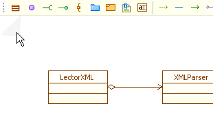
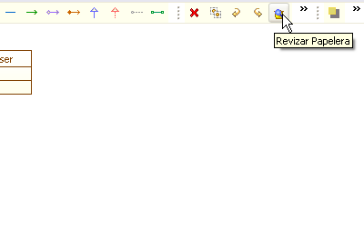
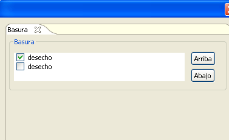
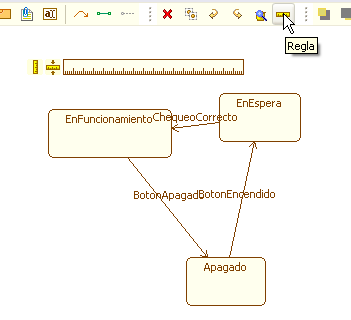
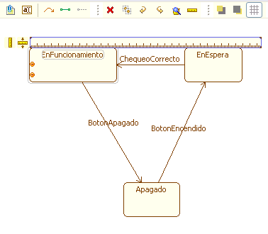
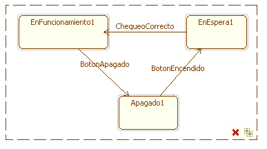
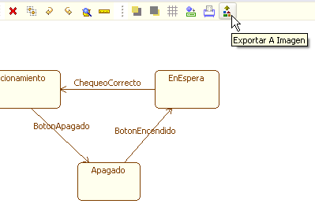
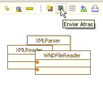

Herramientas de UML+
El framework UML+ posee un conjunto de herramientas comunes a todos los plugins, que facilitan el manejo de los elementos gráficos asociados a los diferentes diagramas. Dentro de dichas funcionalidades se encuentran:
- Crear, editar, copiar y borrar artefactos.
- Deshacer y rehacer acciones sobre los artefactos
- Selección flotante de elementos
- Ajustar la cuadrícula
- Regla de ajuste
- Desechar diseño
- Exportar a imagen
- Imprimir
- Traer atrás y adelante un artefacto (visibilidad)
Algunas de estas funcionalidades que requieren particular atención:
Desechar: Este comando se activa de manara gráfica arrastrando la parte superior izquierda del marco de modelado artístico, generando un pequeño doblez

Figura 1. Desechar
Una vez la pestaña supera un porcentaje (10%) del marco de
trabajo, el diagrama actual es desechado quedando nuevamente el espacio
de trabajo en blanco, de manera similar a desechar una hoja desde la
mesa de trabajo. Dichos diagramas se encuentran almacenados en la
papelera y es posible recuperarlos, mediante el botón de Revisar
Papelera:

Figura 2. Papelera
En el dialogo, como muestra la Figura 3, se podrán encontrar todos los diagramas desechados anteriormente, con la posibilidad de desechar el actual y cambiarlo por uno de estos esquemas que estaban anteriormente en la basura.

Figura 3. Contenido de la papelera
Regla: Esta herramienta permite alinear elementos gráficos de un diagrama con facilidad tanto vertical como horizontalmente, con lo cual se pueden generar diagramas mas organizados y llamativos visualmente, de manera rápida.

Figura 4. Herramienta regla
La regla tiene dos elementos principales, un icono para alinear un artefacto del diagrama que este seleccionado y otro para cambiar la regla de orientación (horizontal-vertical). Es posible también ajustar el tamaño de la regla arrastrando esta por cualquiera de los extremos.

Figura 5. Alineando elementos con la regla
Selección El sistema de selección en el framework UML+ permite manipular conjuntos de artefactos de manera rápida y sencilla. Para generar un área de selección basta con dar click y arrastrar hasta que se incluya el área con los artefactos a manipular.

Figura 6. Selección de elementos
El área de selección se mantendrá, lo que permite mover los elementos seleccionados dando clic y arrastrando en el área interior de selección, borrarlos mediante la tecla suprimir o con el icono en la parte inferior (depende de la dirección de arrastre para crear la selección), o crear un duplicado de estos igualmente con el icono en la parte inferior.
Exportar a Imagen Este comando permite salvar el diagrama actual visible en formato jpeg, png, gif y bmp. Un dialogo se muestra para escoger la localización de la imagen, el nombre y el tipo.

Figura 7. Exportando elementos
Herramientas de visibilidad: Debido a la libertad de movimiento de los elementos gráficos en un diagrama es posible que un par o más de éstos se coloquen uno encima del otro. El framework UML+ trabaja bajo el concepto de capas, así que todos los elementos se encontrarán en una capa diferente y los elementos que estén en capas superiores ocultarán a los elementos de capas inferiores al generar superposiciones gráficas.

Figura 8. Visibilidad de elementos
Es posible controlar orden de superposición mediante las funciones “Traer adelante” y “Enviar Atrás”. “Traer adelante” moverá el elemento seleccionado a una capa en el frente, lo que lo hará más visible, para el caso de la Figura 9 el elemento XMLParser de un diagrama se trae al frente de la clase WNDFileReader

Figura 9. Traer al frente elemento
El comando Enviar Atrás mueve un elemento hacia una capa en el fondo por lo que disminuye la visibilidad de dicho elemento.

Figura 10. Enviar atraz elemento